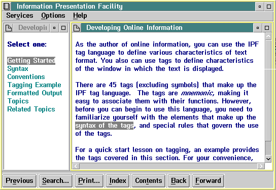

As we have seen, one way to display a secondary window is to enable the user to select a hypertext link from one window to another. Another way is to link the user to the secondary window automatically. For example, in the following figure the window on the right is displayed automatically when the user selects the window on the left (perhaps from the Contents window).

Example of a window displayed automatically. The window on the right was displayed automatically.